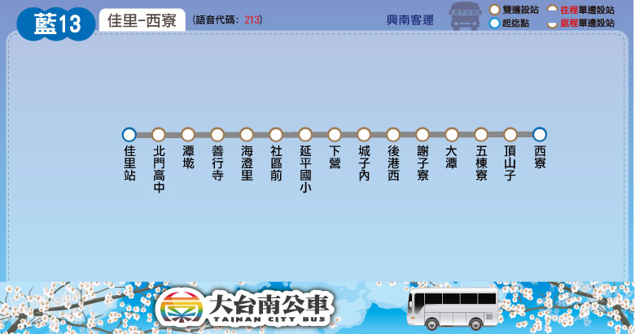

Tainan Bus for FUN
路線圖
路線資訊
票價表
時刻表
轉乘資訊
大台南公車 ─ 藍13 路線圖
Tainan Bus Blue 13, Route Map

大台南公車 ─ 藍13 路線資訊
Tainan Bus Blue 13, Route Information
起訖點
佳里 － 西寮
營運公司
興南客運
首／末班車發車時刻
往 西寮：08:15／16:00
往 佳里：08:40／16:25
班距
固定班次
收費方式
里程計費
公車動態資訊
票價表
Ticket Fare
全票
半票
投現
-
-
電子票證
-
-
時刻表
Bus schedule
大台南公車－藍13 主要轉乘點資訊
Tainan bus Blue 13, Transfer information
佳里
藍幹線
、
藍1
、
藍2
、
藍3
、
藍10
、
藍11
、
藍12
、
藍13
、
藍20
、
藍21
、
藍22
、
藍25
橘幹線
棕幹線